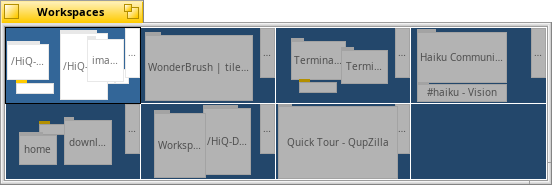

English
EnglishWorkspaces
Workspaces are virtual desktops, complete with their own resolution, color depth and background.
Up to 32 of these workspaces can be set from the Screen preferences.
The Workspaces desktop applet can be used to change workspaces or to drag a window from one to another.
The quick keyboard shortcut to change workspaces is CTRL ALT CURSOR

Further reading:
Workspaces
Workspaces